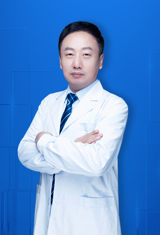
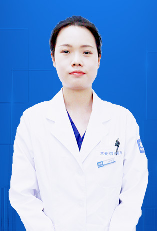
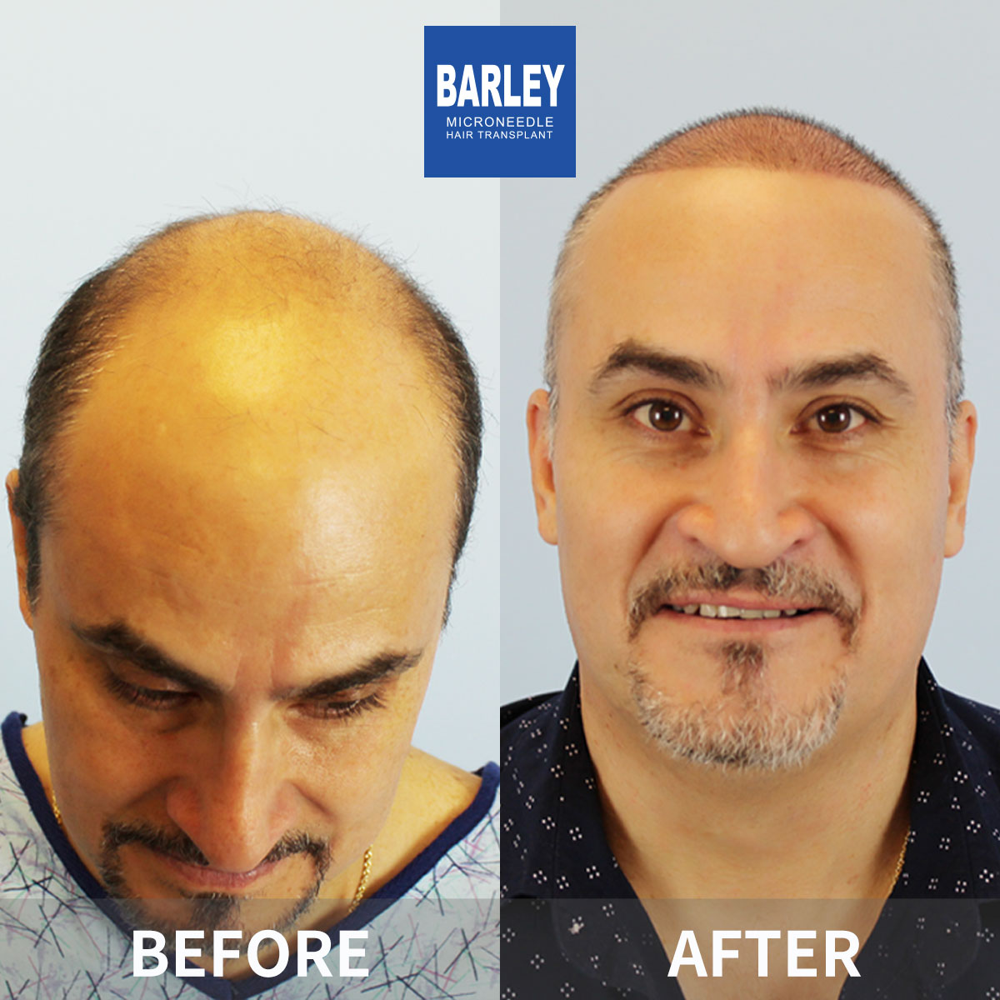

Our distinguished group of hair restoration professionals combines years of clinical mastery with the latest advances in microneedle technology. Each physician holds board certification, has trained at top-tier institutions worldwide, and shares a deep commitment to producing results that appear effortless and authentic for patients everywhere.

Director, Beijing Clinic
Serving as Associate Chief Physician and a founding figure of the Asian Hair Transplant Association, Dr. Yin has earned national acclaim as a hair restoration authority. His practice centers on revision surgeries and intricate corrective work, having helped thousands of individuals who experienced disappointing outcomes elsewhere find the results they originally deserved.

Technical Director, Beijing Clinic
Recognized as a trailblazer in creative microneedle transplantation, Dr. Wang focuses on extensive restoration projects and boosting overall density. Having cared for hundreds of overseas patients, he is celebrated for his exacting graft placement technique and outcomes that are virtually indistinguishable from natural growth.

Technical Director, Beijing Clinic
Dr. Feng has earned widespread admiration for her refined hairline design skills and deep command of FGF dual-factor microneedle transplantation. Her gentle technique paired with an unwavering dedication to visual excellence has cultivated a loyal following among international clientele.

Director, Beijing Clinic
Actively involved with the 528 Hair Love Foundation's humanitarian missions, Dr. Song merges clinical excellence with a heartfelt mission to broaden access to quality hair restoration. His particular strengths lie in sculpting natural hairlines and executing expansive procedures leveraging FGF technology.

Director, Beijing Clinic
Bringing a wealth of real-world clinical knowledge to each case, Dr. Li is distinguished by his patient-first mindset. He devotes considerable time to grasping every individual's goals and tailors each surgical strategy accordingly, maintaining a remarkable track record with patients from overseas.

Director, Chengdu Clinic
Heading the Chengdu location, Dr. Guan focuses on microneedle FUE and aesthetically driven hair transplantation. He has cultivated a strong reputation for maintaining exceptional graft survival rates and has welcomed numerous international patients to his practice over the years.

Technical Director, Nanchang Clinic
In his role as technical director for the Nanchang facility, Dr. Duan has developed specialized expertise in no-shave extraction techniques and large-scale follicle harvesting. His proficiency with FGF technology promotes accelerated healing and more vigorous graft growth.

Director, Jinan Clinic
A seasoned practitioner at the Jinan clinic, Dr. Gao possesses deep expertise in crafting hairlines and enhancing density through microneedle methods. His integration of FGF-enhanced transplantation technology promotes swifter recovery and fuller, more robust results for each patient.

Director, Nanchang Clinic
At the helm of the Nanchang clinic, Dr. Xiong concentrates on high-density microneedle transplantation and broad coverage procedures. His command of FGF technology enables reduced healing timelines and reliably strong graft establishment.

Director, Qingdao Clinic
Spearheading the Qingdao clinic, Dr. Liu carries a wealth of experience in microneedle transplantation and expansive restoration work. His skilled application of FGF technology ensures optimal outcomes paired with minimal downtime for those under his care.

Director, Shanghai Clinic
Leading the Shanghai location, Dr. Ma is highly esteemed for his mastery of high-density microneedle treatments, creative hairline construction, and correcting scars left by previous transplant operations. His meticulous eye for detail yields results that consistently appear organic and believable.

Technical Director, Shanghai Clinic
Serving as Technical Director in Shanghai, Dr. Fu is a devoted contributor to the 528 Hair Love Foundation's humanitarian medical efforts. His clinical focus encompasses microneedle density improvement, artful hairline sculpting, and the correction of surgical scars.

Technical Director, Shenyang Clinic
Holding a board position within the China Medical Association's Plastic and Aesthetic Surgery Branch, Dr. Ge serves as Technical Director at the Shenyang clinic. His expertise spans the full array of microneedle transplantation methods, with particular distinction in density work and artfully designed restoration.

Director, Xi'an Clinic
A board member of the China Medical Association's Plastic and Aesthetic Surgery Branch, Dr. Wang directs the Xi'an clinic. His capabilities extend across hairline architecture, high-density microneedle applications, and comprehensive large-area transplant operations.

Director, Zhengzhou Clinic
An Associate Chief Physician in Plastic Surgery and regular contributor to the 528 Hair Love Foundation's humanitarian initiatives, Dr. Zhong is particularly noted for his skill in specialized procedures such as facial hair restoration, including sideburns and eyebrows.

Technical Director, Shanghai Clinic
An Associate Chief Physician in Surgery connected to Harbin Hospital's Internet Hospital platform, Dr. Fang demonstrates particular strength in expansive transplant operations, microneedle density optimization, and refined artistic hairline construction.

Doctor, Beijing Clinic
A dedicated participant in the 528 Hair Love Foundation's charitable medical programs, Dr. Cui is valued for her imaginative transplant techniques and her ability to produce density that appears genuinely natural in every procedure she performs.

Doctor, Guangzhou Clinic
Practicing at the Guangzhou clinic, Dr. Lin takes an active role in the 528 Hair Love Foundation's community outreach efforts. His areas of concentration include hairline sculpting, broad-area transplantation, and high-density microneedle procedures.

Hair Transplant Doctor, Beijing Clinic
Connected to Harbin Hospital's Internet Hospital network, Dr. Liu offers thorough hair loss assessment and individualized treatment strategies. She embraces a comprehensive philosophy when tackling the various forms and progression stages of hair thinning and baldness.

Hair Transplant Doctor, Beijing Clinic
Working through Harbin Hospital's Internet Hospital, Dr. Fang concentrates on holistic hair loss management, bespoke hairline planning, and large-area transplant operations for patients dealing with advanced thinning.

Hair Transplant Doctor, Beijing Clinic
Also connected to Harbin Hospital's Internet Hospital, Dr. Tang dedicates her practice to hairline sculpting, managing significant hair loss, and delivering high-density microneedle transplantation for individuals who want results that endure and appear completely authentic.
Discover the advantages of partnering with globally trained hair restoration professionals who refuse to compromise on quality.
Each physician on our roster holds active board certification and has undergone intensive specialized training in hair restoration, guaranteeing that patient safety and surgical excellence remain paramount at all times.
Having collectively surpassed 100,000 completed procedures, our surgeons possess a depth of practical knowledge that translates into superior outcomes whether you need a minor refinement or a full-scalp reconstruction.
Our medical staff maintains credentials from the world's leading hair restoration associations and routinely participates in advanced training programs at renowned institutions across the globe.
Beginning with your introductory call and extending through your final assessment, you benefit from focused, personal guidance designed around your specific situation, questions, and healing timeline.
Our bilingual coordinators remove every language barrier, offering clear communication during pre-trip arrangements, video assessments, on-site guidance, and every post-operative check-in along the way.
Across thousands of authenticated reviews from patients worldwide, our surgeons consistently earn top marks, a reflection of the relentless pursuit of excellence that defines everything we do.
Every operation follows globally accepted safety guidelines and protocols
Clinical tenure across our senior surgical staff
Strategically positioned throughout China's major metropolitan areas
Measured across every demographic and procedure category
Confidence and comfort at every stage of your journey
Through our refined local anesthesia methods, you stay at ease for the duration of your procedure. We maintain an excellent follicle survival rate, and those we treat consistently describe their recovery as remarkably comfortable with little to no pain.
Every individual on our operative team carries valid medical licensure and professional credentials. We observe rigorous international safety standards so that you can have complete confidence in the caliber of your treatment from start to finish.
Our precision microneedle technique produces tiny incisions, speeds up recovery, and leaves virtually no trace of scarring. You'll resume everyday activities faster than expected, sporting results that appear completely authentic.
Witness the life-changing transformations our surgeons have delivered




Candid moments shared between our team and the people we've helped

Patient posing alongside our operative team

Patient and lead surgeon after full recovery

Another pleased individual shares their experience

Patient with specialist prior to departing the facility

Contented patient with our specialist following treatment

Patient proudly displaying their refreshed appearance

Patient overjoyed with the final transformation

Patient embarking on a fresh start with restored hair
Genuine accounts from individuals who traveled from around the globe
"I flew from Los Angeles specifically for Dr. Yin because of his reputation in corrective surgery. Two prior clinics had botched my hairline with an unnatural, pluggy look. Dr. Yin studied my scalp for twenty minutes, explained exactly what he would fix and what he could not, and then delivered results that finally look like real hair. The man is an artist with a scalpel."
"What won me over was Dr. Wang's honesty. Another clinic in London wanted to sell me 4,000 grafts. Dr. Wang looked at my photos and said 2,200 would be enough. He could have billed me for more and I would never have known. That integrity is rare in any medical field, let alone one where patients are travelling from overseas and cannot easily verify things."
"Dr. Feng personally drew my new hairline on my forehead with a surgical marker before a single graft was taken. She adjusted it three times based on my feedback until it looked right to both of us. I have never had a doctor treat me as a partner in the process. She genuinely cared about what I wanted, not just what was easiest for her."
"Being put under the knife in a foreign country was terrifying. But from the moment Dr. Song sat down with me, his calm demeanour put every fear to rest. He spoke slowly, answered every question without rushing, and on the day of surgery he checked on me every forty-five minutes during the seven-hour procedure. Bedside manner matters, and his is exceptional."
"Ich bin aus Deutschland geflogen, weil Dr. Li den Ruf hat, der gründlichste Arzt zu sein, den man finden kann. Er hat meine Kopfhaut mit einem Dermatoskop analysiert, jeden Quadranten vermessen und mir eine detaillierte Präsentation meiner Optionen gezeigt. Diese Ebene der Präzision habe ich in München oder Zürich nicht gefunden. Die Reise hat sich mehr als gelohnt."
"My mother came with me from Dubai and she was nervous about everything. Dr. Li greeted her in the waiting area, offered her tea, and spent fifteen minutes explaining the procedure to her in English so she would feel comfortable. No surgeon had ever done that for my family before. It was the human touch that sealed the deal for us."
Contemporary spaces designed to global medical standards

Fully outfitted and meticulously sanitized

Private setting for confidential discussions

Unwind in comfort after your treatment

The first thing you'll see upon arrival

Crafted with your relaxation in mind

Settle in before your scheduled visit
Key details regarding our medical staff and their professional backgrounds
Tap any option below to copy the details
15810155700
+86 13730143529
hairtransplant@qq.com